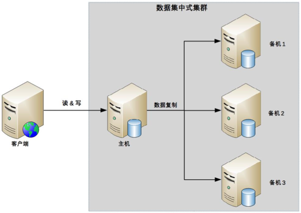
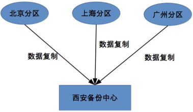
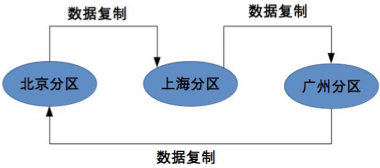
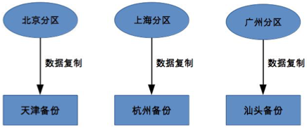

25-高可用存储架构：集群和分区
数据集群
主备、主从、主主架构本质上有一个隐藏的假设：即主机可以存储所有的数据，但是主机本身的存储和处理能力肯定是有限的。随着业务的发展，单独服务器肯定是不够存储和处理的，所以必须所用多台服务器来存储数据，这就是数据库集群。
集群就是多台机器组合在一起形成的系统，这里的“多台”，数量上至少要三台。之前的主备、主从、主主都是二台机器。根据集群中机器的角色，集群分为二类：数据集中集群、数据分散集群。
数据集中集群
数据集中集群与主备、主从架构类似，数据集中集群也称作一主多备、一主多从。数据都是只往主机中写，而读操作可以参考主备或主从架构进行灵活多变。下图中其中一种架构：

数据集中集群的复杂度体现在以下几个方面：
主机如何将数据复制到备机
主备和主从架构中只有一条复制通道，而数据集中集群会存在多个复制通道。多个复制通道会增大主机复制的压力，有时需要考虑如何降低主机的复制压力，或者考虑如何降低主机复制给正常读写带来的压力。
多条复制通道可能导致多个备机的数据不一致，需要对多个备机的数据进行一致性校验。
备机如何检测主机的状态
主备和主从架构中，只有一台备机需要进行主机状态的判断。在数据集中集群中，有多个备机需要到主机的状态进行判断，而多个备机的判断结果可能不一样，如何处理备机状态判断不致的的问题，是一个复杂的问题。
主机故障后，如何决定新的主机
主备架构中， 如果主机故障，将备机升级为主机即可。而在数据集中集群中，有多台备机，如何决定哪台备机长升级为主机也是一个复杂的问题。
目前开源的数据集中集群以zookeeper方案为典型，zookeeper方案用ZAB算法解决上述的这几个问题。
数据分散集群 数据分散集群是指多个服务器组成一个集群，每台服务器存储部分数据。同时，为了提升硬件的利用率，每台服务器也备份部分数据。
数据分散集群的复杂点在于如何把数据分配到服务器上，需要考虑以下几点：
均衡性
算法需要保证服务器上的数据分区基本是均衡的，不能存在某台服务器上的数据分区是另外一个服务器上数据分区几倍的情况。
容错性
当出现部分服务器故障时，算法需要将原来分配给故障服务器的数据分区分配给其它服务器。
可扩容性
当集群容量不够后，扩充新的机器后，算法能够自动将部分数据分区迁移到新的服务器上，并保证扩容后所有服务器的均衡性。
数据分散集群和数据集中集群的不同点在于，数据分散集群中的每台服务器都可以进行读写请求，因此不存在单独负责写的主机的角色。但是在数据分散集群中，必须有一个角色来执行数据分配算法。这个角色可以是独立的一台服务器，也可以是集群中自己选举出一台服务器。如果是集群选举出一台服务器来承担数据分配的职责，则这台服务器我们也称作主机。
Hadoop的实现就是一台独立的服务器负责数据分区的分配，这台服务器叫做Namenode。 ES则是通过选举一台服务器来做数据分区的分配，这台服务器叫做master node。
数据集中集群中，数据只能写到主机上。数据分散集群中，数据可以写到任意服务器上。因此，数据集中集群适合数据量不大、集群数量不多的场景。如zookeeper集群，一般推荐5台机器左右，数量量是单独服务器可以支撑。而数据分散集群，由于其良好的伸缩性，适合数据量巨大，集群数量多的场景。
数据分区
之前讨论的存储高可用方案都是基于硬件故障的场景去考虑和设计的，主要考虑当部分硬件出现故障时如何处理。但是对于非常大的灾难，可能导致所有的硬件不可用。此时我们需要基于地理区域设计数据高可用方案。
数据分区是指将数据按一定的规则进行分区，不同分区分布在不同的地理位置，每个分区存储一部分数据，通过这种方式避免地理级别的故障造成的影响。采用这种架构，即使发生很大的地理灾害，也只是导致部分数据不可用，不会导致所有的数据不可用。当故障恢复后，也可以从其它地方的备份数据中快速恢复业务。
设计一个分区架构，需要考虑以下几点：
数据量
数据量的大小决定了分区规则复杂度。数据量越大，分区规则越复杂，需要考虑的点会越多。
分区规则
地理位置有近有远，根据地理位置的距离，可以分为洲际分区、国家分区、城市分区。具体采取哪种分区，需要综合考虑业务和成本等因素。一般洲际分区、国家分区一般也仅作为备份。对于城市分区，由于网络延迟低、业务相似，分区可以对外提供服务，可以满足异地多活之类的需求。
复制规则 常见的数据分区的复制规则有三种：集中式、互备式、独立式
集中式
集中式备份是指存在一个总的备份中心，所有的分区数据都备份到这个备份中心。

其主要优缺点：
- 设计简单，各分区间并无直接联系，可以做到互不影响。
- 扩展容易，如果新增分区，只要把分区的数据备份到备份中心即可。
- 成本较高，需要建立一个独立的备份中心。
互备式

其主要优缺点：
- 设计比较复杂，各个分区除了要承担业务数据存储，还要承担数据备份功能，相互之间相互影响。
- 扩展麻烦。新增一个分区时，需要修改复制规则。
- 成本低
独立式 独立式备份指每个分区自己有独立的备份中心。 
需要注意的是，各个分区的备份并不是和原来的分区在同一个地方。
独立式备份的优缺点是：
- 设计简单，各分区互不影响。
- 扩展容易，新增的分区只需要搭建自己的备份中心即可。
- 成本高，每个分区需要独立的备份中心，备份中心的场地成本是主要成本，因此独立式比集中式成本要高很多。